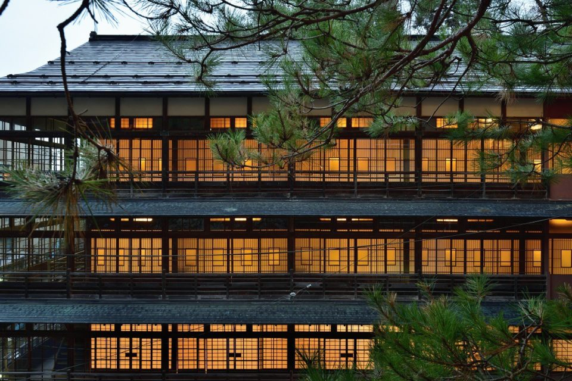
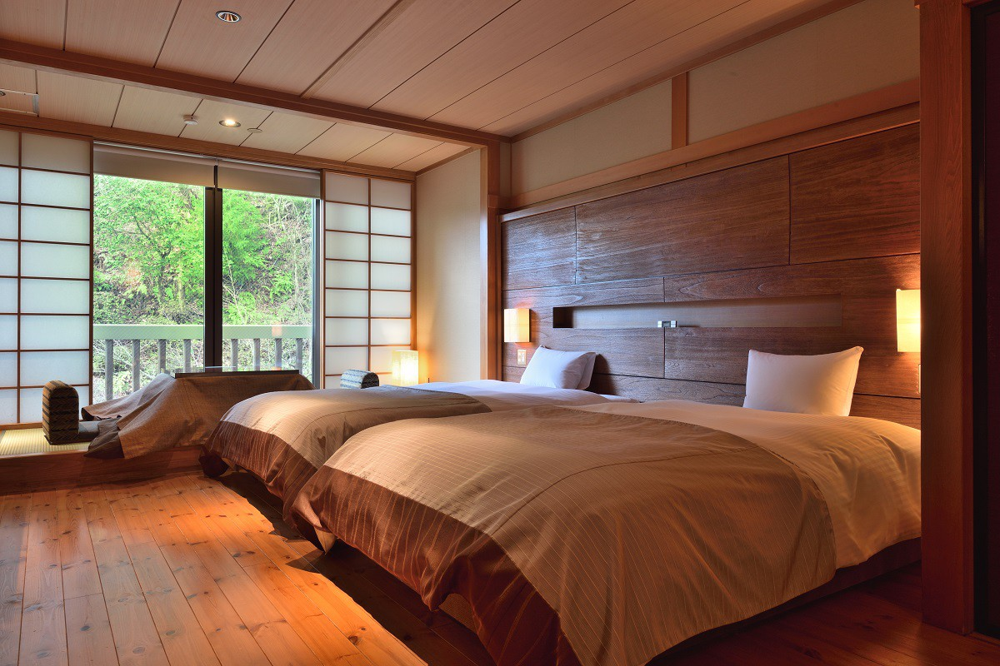
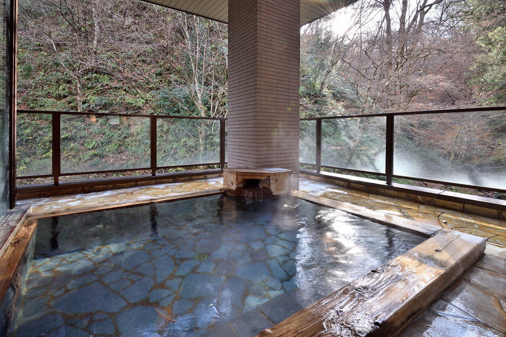
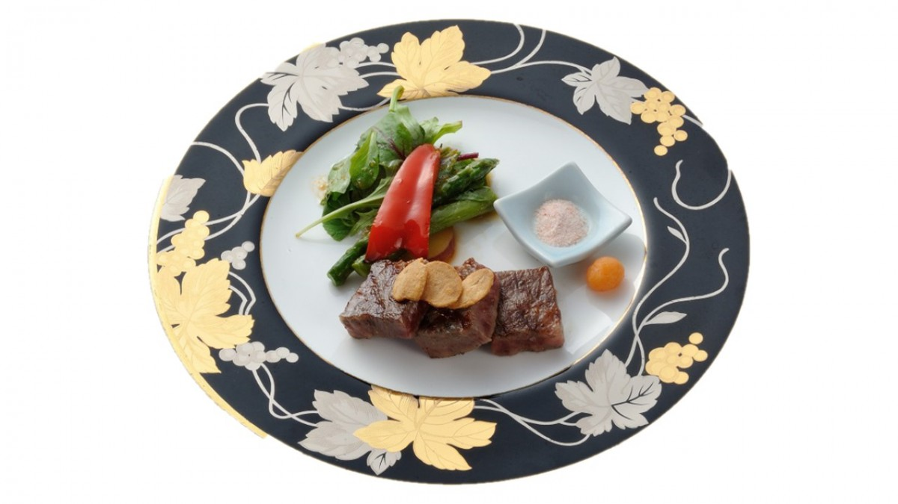

Префектура Мияги · Сироиси · рёкан
Yunushi Ichijoh: рёкан с почти шестивековой историей в онсэне Камасаки

Онсэн Камасаки на юге префектуры Мияги с давних пор зовут «целебными водами Оу». Рёкан Yunushi Ichijoh открылся вместе с самим источником и ведёт счёт уже почти на шесть веков.
История
Источник, найденный серпом
В городе Сироиси на юге префектуры Мияги есть небольшой курорт, онсэн Камасаки. В старину эти земли входили в провинцию Муцу. Источник открыли в 1428 году, в смутное время сёгуната Муромати. По преданию, горячую воду нашёл местный крестьянин: он косил траву, и кончик его серпа ударил в источник. Отсюда и название, «камасаки» по-японски значит «кончик серпа».
Во многих японских онсэнах открытие воды приписывают странствующему монаху Гёки (668–749), которого легенды считают первооткрывателем множества источников, или раненым воинам, а то и вороне или оленю. В Камасаки обошлось без чудес: воду нашёл обычный человек за повседневной работой, и в этой простоте виден характер здешних мест.
Почти одновременно с источником открылся и постоялый двор, из которого вырос рёкан Yunushi Ichijoh. За почти шестьсот лет им управляли двадцать поколений одной семьи.
Дорога
Вверх по крутому склону
От станции Сироиси на линии Тохоку до рёкана около 15 минут на такси. Дорога идёт мимо нескольких тихих деревень, потом между гостиницами онсэна, которые стоят плечом к плечу, и наконец взбирается на крутой склон. Наверху стоит Yunushi Ichijoh, и первым делом взгляд притягивает главный корпус: деревянное здание в четыре уровня, три этажа над землёй и частично ещё один подземный.
Главный корпус строили в 1910–1930-х годах, и он внесён в государственный реестр материальных культурных ценностей. В нём устроен ресторан, где едят среди старинных интерьеров.
Номера
Старый постоялый двор в современном виде
Рёкан сохраняет дух старого постоялого двора, но номера и общие помещения постепенно перестраивают под новое время. Интерьеры получились современными, с японскими традиционными деталями, и при этом удобными и бережными к природе. Особенно хороши люксы «Итидзё» и «Юнуси», из которых не хочется уходить.

Онсэн
Два источника и пещерная купальня
У рёкана два собственных источника. Вода бесцветная и прозрачная, и славится она целебными свойствами: здесь можно отмокать сколько хочется. Состав натриево-хлоридный и сульфатный. Целебную ванну наполняют прямо из источника без разбавления, воду только подогревают. Считается, что она помогает при болях в суставах, ревматизме, болях в мышцах, хронических болезнях кожи и при восстановлении после операций.

Для гостей работают по две большие купальни для мужчин и женщин (круглые сутки) и одна открытая купальня. Ещё в 12 номерах есть свои ванны.
Ужин
Кайсэки в старом корпусе
Ужин, которого ждёшь весь день, подают в главном корпусе, где долгая история чувствуется в каждой детали. Меню кайсэки меняется каждый месяц. Блюда простые, как и положено горной гостинице, и ужин напоминает угощение в деревенском доме, после которого становится тепло на душе. Ужинают в отдельных комнатах, а завтрак, японский или западный, подают в общем зале.

В 2020 году ночь с ужином и завтраком стоила от 16 350 иен без налога. В рёкане есть магазин, бар и настольный теннис.
Весной на юге Мияги стоит увидеть и сакуру вдоль реки Сироиси: о ней рассказано в статье «Сакура на юге Мияги».
Yunushi Ichijoh
- Адрес
- префектура Мияги, Сироиси, Фукуока-Курамото, Камасаки, 1-48
- Телефон
- +81 224-26-2151
- Номера
- 24
- Цены / Вход
- от 16 350 иен без налога за ночь с ужином и завтраком
- Заезд / выезд
- 15:00 / 11:00
- Как добраться
- на машине около 15 минут от съезда Сироиси скоростной дороги Тохоку; от станции JR Сироиси-Дзао 15 минут на машине, от станции JR Сироиси 13 минут на машине
- Сайт
- ichijoh.co.jp
Фото: Такуми Мияти.